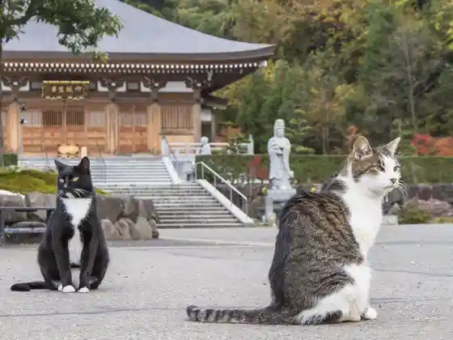
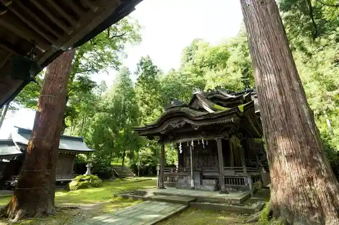
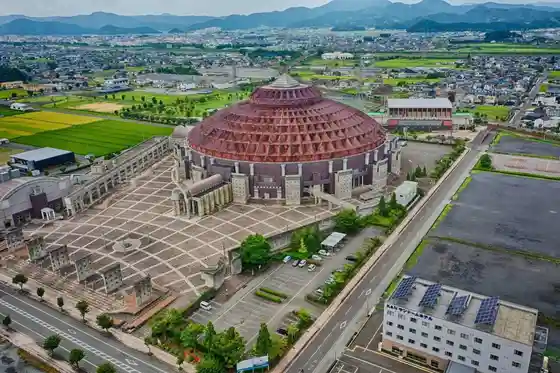
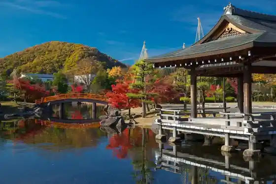

O Tanjo Tera
Echizen, Fukui · 0778-43-6081 · Official / source link

Okata Shrine Otaki Shrine
Echizen, Fukui · Official / source link

Sandomu Fukui
Echizen, Fukui · 0778-21-3106 · Official / source link

Murasakishikibu Park
Echizen, Fukui · 0778-22-3012 · Official / source link

Echizen Soba Village
Echizen, Fukui · 0778-21-0272 · Official / source link
Tagafunaifubirejji
Echizen, Fukui · 0778-27-7120 · Official / source link
Echizen Washi Village
Echizen, Fukui · 0778-42-1363 · Official / source link
Manyo Village Ajimano En
Echizen, Fukui · 0778-27-2204 · Official / source link
Hanagatami Park
Echizen, Fukui · 0778-42-3710 · Official / source link
Echizen Da Hamono Hall
Echizen, Fukui · 0778-24-1200 · Official / source link
Echizen Washi Village Papirusu Kan
Echizen, Fukui · 0778-42-1363 · Official / source link
Roadside Station Echizen Takefu
Echizen, Fukui · 0778-43-5661 · Official / source link
Takefu Chuo Park
Echizen, Fukui · 0778-42-7530 · Official / source link
Shikibu Onsen Yu Raku Sato
Echizen, Fukui · 0778-25-7800 · Official / source link
Echizen Washi Village U Ritsu no Kogei Kan
Echizen, Fukui · 0778-43-7800 · Official / source link
Oshio Hachiman Shrine
Echizen, Fukui · 0778-23-8074 · Official / source link
Go Ko Shrine
Echizen, Fukui · 0778-27-1341 · Official / source link
Masataka Tera Koyasu Kannon
Echizen, Fukui · 0778-27-2423 · Official / source link
Insetsu Tera
Echizen, Fukui · 0778-22-0442 · Official / source link
Ajimano Shrine
Echizen, Fukui · 0778-22-7434 · Official / source link
Reisenji
Echizen, Fukui · 0778-27-1118 · Official / source link
Soja Dai Shrine
Echizen, Fukui · 0778-22-1127 · Official / source link
Komaru Castle Ruins
Echizen, Fukui · 0778-22-3007 · Official / source link
Murasaki Yukari no Kan (Murasakishikibu to Ko Museum)
Echizen, Fukui · 0778-43-5013 · Official / source link
Hon Kyo Tera
Echizen, Fukui · 0778-22-2107 · Official / source link
Jofuku Tera
Echizen, Fukui · 0778-27-1773 · Official / source link
Yanagi Falls
Echizen, Fukui · 0778-22-7434 · Official / source link
Manyo Kiku Flower Garden
Echizen, Fukui · 0778-27-7800 · Official / source link
Shogaku Tera
Echizen, Fukui · 0778-22-1319 · Official / source link
Kokubunji (Echizen)
Echizen, Fukui · 0778-22-3088 · Official / source link
Kura no Tsuji
Echizen, Fukui · 0778-22-3012 · Official / source link
Mido Yo Gan Tera
Echizen, Fukui · 0778-22-0981 · Official / source link
Murasakishikibu Park Fuji no Kairo
Echizen, Fukui · 0778-22-3012 · Official / source link
Hino Shrine
Echizen, Fukui · 0778-21-2335 · Official / source link
Kotoku Tera
Echizen, Fukui · 0778-27-1427 · Official / source link
Manyo Village Ajimano En Museum Manyo Kan
Echizen, Fukui · 0778-27-2204 · Official / source link
Gekko Tera
Echizen, Fukui · 0778-22-6367 · Official / source link
Echizen Kakosatoshi Furusato Ehon Kan (Raku)
Echizen, Fukui · 0778-21-2019 · Official / source link
Ryusen Tera
Echizen, Fukui · 0778-22-4586 · Official / source link
Takara En Tera
Echizen, Fukui · 0778-22-1645 · Official / source link
(Chihiro no Umare Ta Ie) Memorial Museum
Echizen, Fukui · 0778-66-7112 · Official / source link
Mado An Tera
Echizen, Fukui · 0778-23-0439 · Official / source link
Mei Shiro Farm
Echizen, Fukui · 0778-42-7201 · Official / source link
Hino Yama
Echizen, Fukui · 0778-22-3007 · Official / source link
Echizen Imadate Geijutsu Kan
Echizen, Fukui · 0778-42-2700 · Official / source link
Echizen Washi Village Kami no Bunka Museum
Echizen, Fukui · 0778-42-0016 · Official / source link
Hachi Tsu Sugimori Ringaku Shu Center
Echizen, Fukui · 0778-42-3800 · Official / source link
Kojiro Park
Echizen, Fukui · 0778-22-3012 · Official / source link
Ho Yamadera
Echizen, Fukui · 0778-22-4074 · Official / source link
Kongo Yama Shari In Ao Tera
Echizen, Fukui · 0778-42-1114 · Official / source link
Akimitsu Tera no Dai Icho
Echizen, Fukui · Official / source link
Kyu Meshi Hachiman Shrine
Echizen, Fukui · Official / source link
Go Setsu Tera
Echizen, Fukui · 0778-27-1002 · Official / source link
Kawa Taku Yama Yoshiharu Tera
Echizen, Fukui · 0778-22-1586 · Official / source link
Echizen Aishinsupotsuariina (Echizen Takefu Chuo Koen Sogo Gym)
Echizen, Fukui · Official / source link
Toki Mizu
Echizen, Fukui · 0778-22-7434 · Official / source link
Yoshino Segawa
Echizen, Fukui · Official / source link
Zenkon Yama Hironori Tera
Echizen, Fukui · 0778-22-4664 · Official / source link
Jinmei Shrine (Kazusa Sha)
Echizen, Fukui · 0778-22-4654 · Official / source link
Echizen Takefu Public Hall Memorial Museum
Echizen, Fukui · 0778-21-3900 · Official / source link
Kinkasan Guriin Land
Echizen, Fukui · 0778-28-1149 · Official / source link
Ashi Yama Park
Echizen, Fukui · 0778-22-3012 · Official / source link
Myoko Tera
Echizen, Fukui · 0778-22-4059 · Official / source link
Furusato Gyararii Shuku Ra
Echizen, Fukui · 0778-23-5811 · Official / source link
Chiyo Tsuru Shrine
Echizen, Fukui · Official / source link
Echizen Chiyo Tsuru no Kan (Echizen Da Hamono Shinko Shisetsu)
Echizen, Fukui · 0778-22-1241 · Official / source link
Hon Ho Jinya Ato
Echizen, Fukui · 0778-22-7434 · Official / source link
Tera Town Tori (Echizen)
Echizen, Fukui · Official / source link
Kongo In
Echizen, Fukui · 0778-22-7188 · Official / source link
Oya Heri Yama Taiho Tera
Echizen, Fukui · 0778-22-1682 · Official / source link
Enkyo Yama Chokei Tera
Echizen, Fukui · 0778-24-2430 · Official / source link
Ryumon Tera
Echizen, Fukui · 0778-22-2215 · Official / source link
Tansu Town Tori
Echizen, Fukui · Official / source link
Rei Matsuyama Yokone Tera
Echizen, Fukui · 0778-24-0655 · Official / source link
Goryo Shrine
Echizen, Fukui · Official / source link
Dai Mushi Shrine
Echizen, Fukui · 0778-22-5041 · Official / source link
Joen Tera
Echizen, Fukui · Official / source link
Fuchu Bashaku Kaido
Echizen, Fukui · Official / source link
Fuji Kaki Shrine
Echizen, Fukui · 0778-22-3106 · Official / source link
En Miyadera
Echizen, Fukui · 0778-24-2758 · Official / source link
Kai Kaminarigashimizu
Echizen, Fukui · 0778-22-5342 · Official / source link
Kagaku Yama Kyo Tera
Echizen, Fukui · 0778-22-3912 · Official / source link
Makoto Sho Tera
Echizen, Fukui · 0778-23-8153 · Official / source link
Kyo Yama Hidehisa Tera
Echizen, Fukui · 0778-22-2893 · Official / source link
Odori Yama Sei Fuku Tera
Echizen, Fukui · 0778-22-2436 · Official / source link
Kinryu Yama Myokoku Tera
Echizen, Fukui · 0778-22-3678 · Official / source link
Echizen Yakusho
Echizen, Fukui · 0778-22-3000 · Official / source link